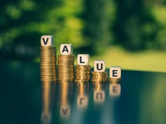
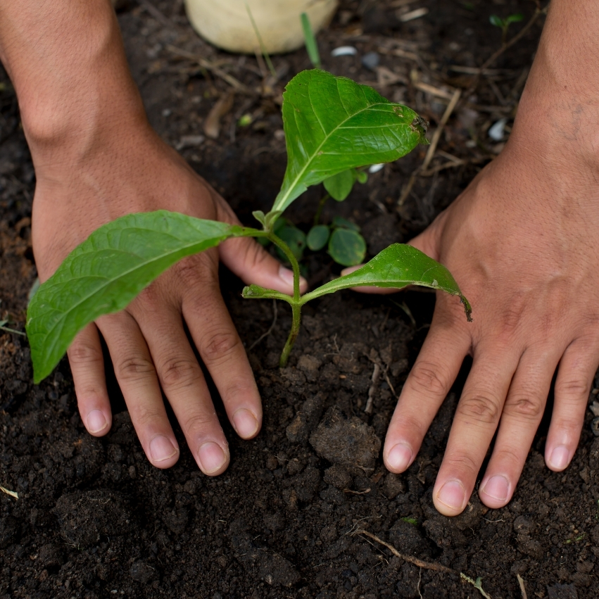
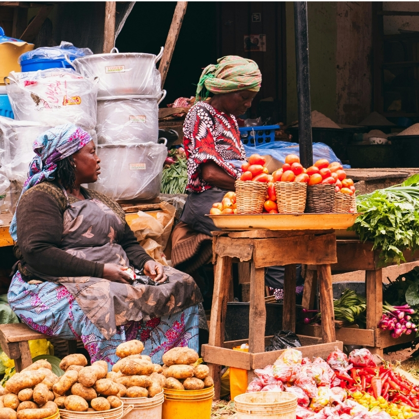
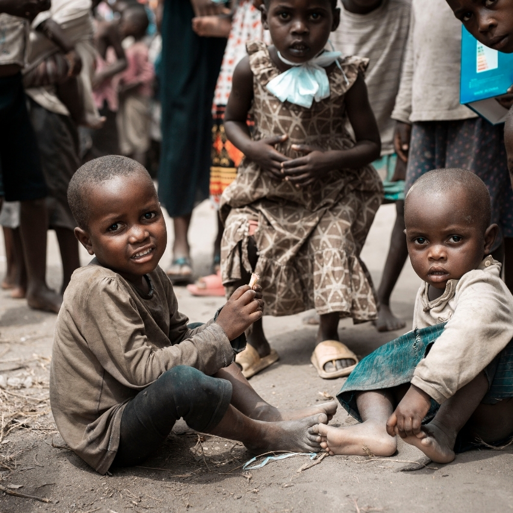
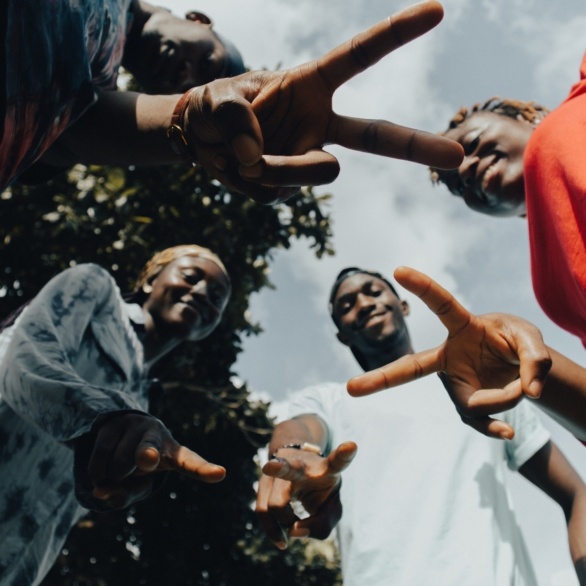
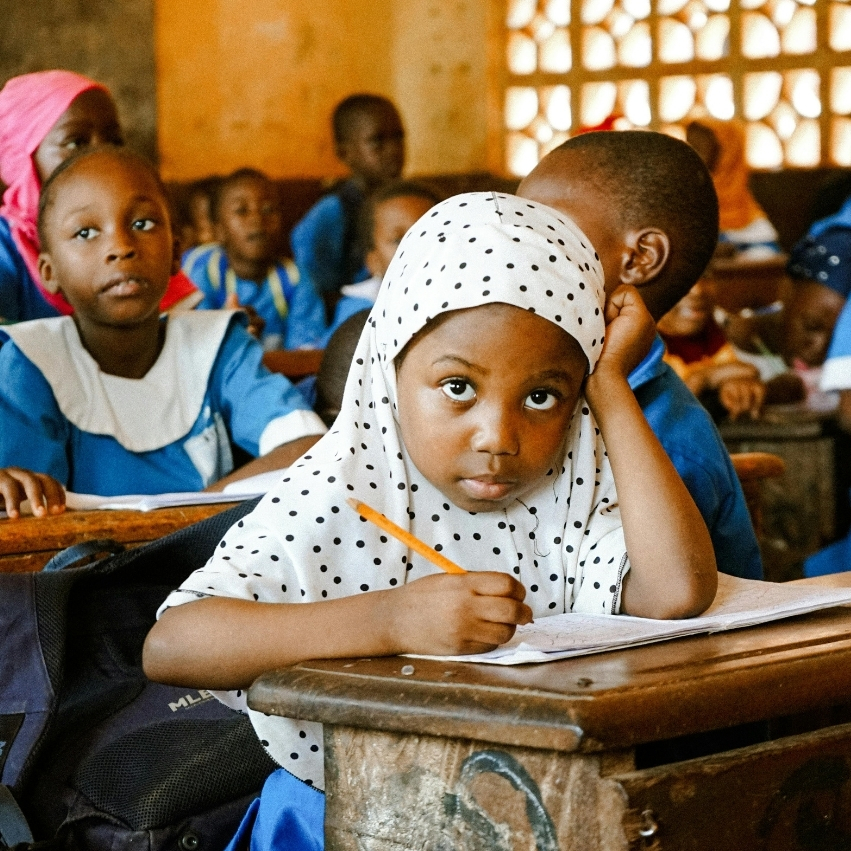

Good Governance & Accountability
Promoting civic education, transparency, responsive leadership, public participation, and community-led accountability.
Building sustainable, transparent, and empowered communities across Kenya and East Africa
Eagle Ecovision CBO is a community-based organization working across Kenya and East Africa. We began with a simple belief: communities that understand their rights, land, water, energy, and governance options can build their own thriving futures. Today we train farmers, plant trees, lead civic advocacy barazas, distribute learning and hygiene supplies, and empower women, youth, orphans, and children.
To strengthen good governance and accountability through youth-led civic engagement and grassroots participation, advancing environmental conservation, education support, and community empowerment across Kisumu County.
A society where good governance and accountability lay the foundation for sustainable development, environmental stewardship, educational opportunity, and empowered communities.
These principles guide our community leadership, civic accountability, and conservation work.

Promoting civic education, transparency, responsive leadership, public participation, and community-led accountability.

Mobilizing communities, especially young people, to protect natural resources and adopt sustainable environmental practices.

Promoting equitable access to learning opportunities through educational support, mentorship, and initiatives that help learners overcome barriers.

Building the capacity of grassroots communities through youth leadership, skills development, inclusive participation, and locally led solutions.

Skills training, legal rights awareness, resources and leadership opportunities.

Care, education support, and dignity for vulnerable children.

Civic leadership, skills, and opportunities for sustainable livelihoods.

Access to quality education, health, and clean environment.
Our board and team are committed to advocacy, governance, and lasting change.